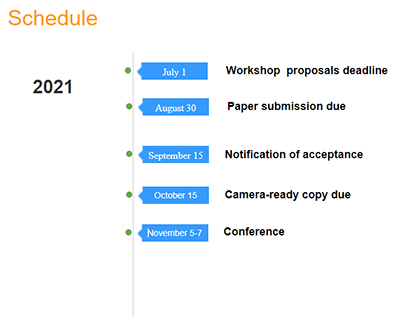

|
Home | Committees | Submission |
|
The 2021 IEEE International Conference on Networking, Sensing and Control(ICNSC) will be held in Xiamen.The seaside city of Xiamen is a modern and international hub with competitive economic strength and emerging industrial bases. Since being chosen as one of China's Special Economic Zones, the vice-provincial city has developed and expanded pillar industries including electronics, mechanics, shipping and logistics, tourism and exhibitions, finance and commerce as well as software and information services. This conference brings together both academy and industry to address new challenges, share solutions and discuss future research directions. It will feature plenary speeches, panel sessions, tutorials, workshops, interactive sessions, and invited/special sessions. Contributions are expected from academia, industry, and management agencies. The conference theme is: Industry 4.0 and AI. | ||
Organizing Committee | ||
| General Honorary Chair Xipeng Xu, Huaqiao University, CN |
General Chairs Jiliang Luo, Huaqiao University, CN |
General Co-Chairs Chunrong Pan, Jiangxi U. Sci & Tech, CN Xuemin Chen, Texas Southern U., USA |
| Program Chair Weimin Wu, Zhejiang University, CN |
Program Co-Chairs Shihua Li, Southeast University, CN Chu Feng, U. d'Evry Val d'Essonne, FR Lin Meng, Ritsumeikan University, JP |
Special Session Chairs Chunlin Chen, Nanjing University, CN Shuai (Steven) Li, Swansea University, UK Ming Hou, DRDC, CA |
| Tutorial/Workshop Chair Jing Bi, Beijing U. of Tech., CN M. Ghahramani, U. College Dublin, IRL |
Publicity Co-Chairs G. Cabri, U. di Modena e Reggio Emilia, ITA Takao Sato, University of Hyogo, JP Huaxiong Li, Nanjing Univ., CN |
Publication Co-Chairs Jianhong Ye, Huaqiao University, CN Qi Kang, Tongji Univ., CN |
| Award Co-Chairs Haibin Zhu, Nipissing Univ., CA Zhiwu Li, Macau U. of Sci. & Tech., CN |
Finance Chair Xinhua Guo, Huaqiao University, CN |
Organizing Committee Co-Chairs Tundong Liu, Xiamen University, CN Jie Huang, Fuzhou University, CN |
| Local Organizing Co-Chairs Lin Zhou, Huaqiao University, CN Zhuoyun Nie, Huaqiao University, CN |
Exhibition Chair Xin Luo, Chinese Academy of Sci., CN |
|
|

Sponsors:
Co-Sponsors: |
Special Session Complete manuscripts must be electronically submitted through the conference website: https://easychair.org/conferences/?conf=icnsc2021 Special Session 1：Applying OR and AI for solving decision problems in Industry 4.0
Special Session 2：Intelligent and Energy-efficient Applications in Edge Computing Special Session 3：Green and Intelligent Logistics and Transportation Systems Special Session 4：Intelligent and learning algorithms for scheduling problems in Industry 4.0 Special Session 5：Ripple effect management for the supply chain Special Session 6：Industry 4.0 and AI, from theory to industrial case study Special Session 7：Advances in Hybrid Model-Data-based control approaches in the future challenging aerospace problems Special Session 8：Monitoring, Control and Intelligent Learning for Networked Systems |